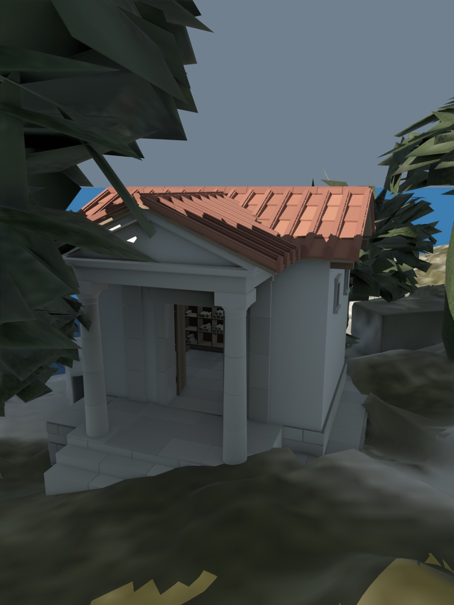
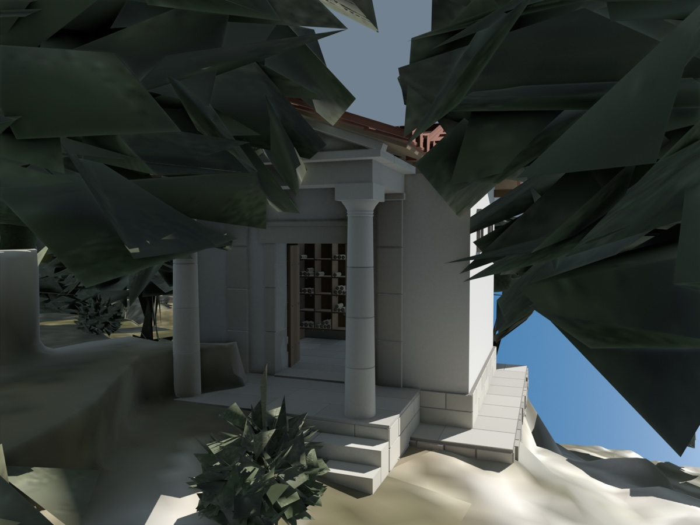
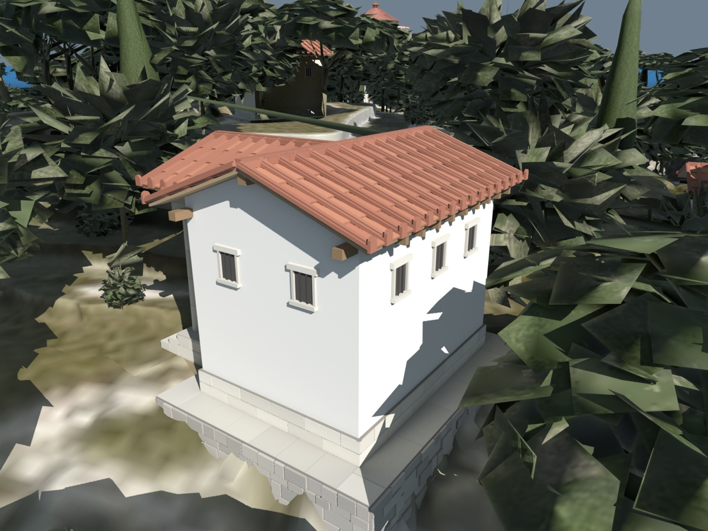
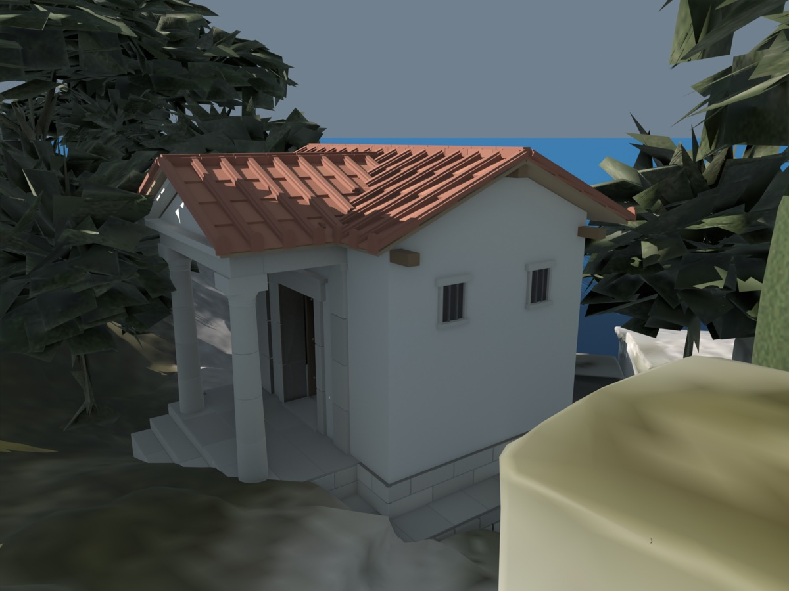
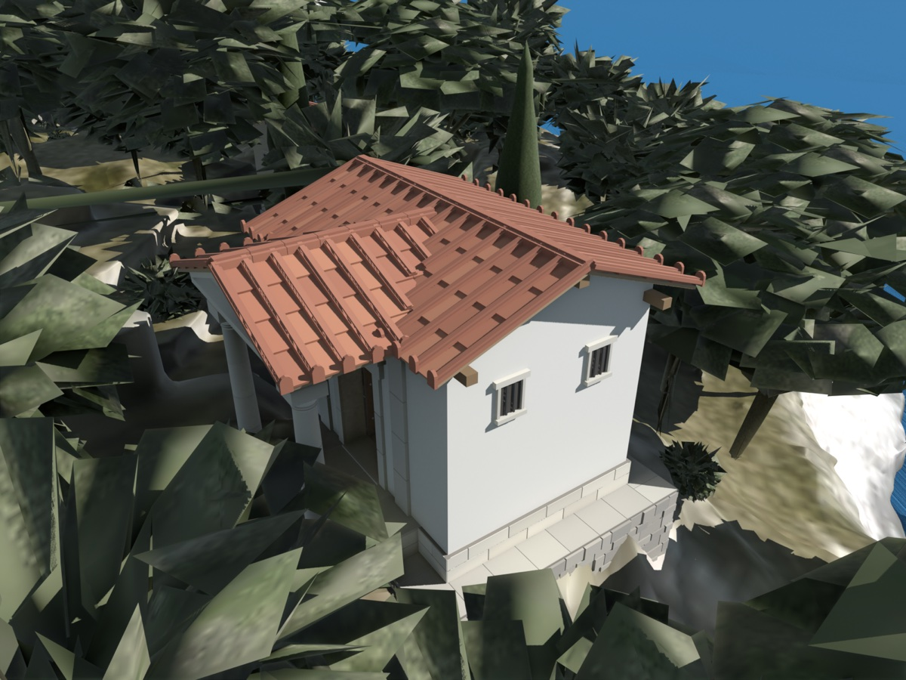

When a machine cannot stop to check with the others on every change, what can it still promise on its own? That no one sees a reply before the message it answers? That no one sees a change half made? That two people never take the last item?
We find out by exploring what ancient Greek librarians could still promise their readers when the couriers between the libraries stopped running.
After Peter Bailis, Aaron Davidson, Alan Fekete, Ali Ghodsi, Joseph M. Hellerstein and Ion Stoica, Highly Available Transactions: Virtues and Limitations, 2014

A database is replicated. A network partition can cut replicas off from one another for any length of time, and every replica a client can reach must still answer, from its own state.
This edition tells it in the reading rooms of the scholars' coast, on a day when the couriers have stopped.
The two replicas cannot reach each other. Write at A, then read.
Every library on the scholars' coast has a reading room, where a reader comes with business. What the other libraries know reaches it by courier, and couriers can be stopped, cutting one part of the coast off from the rest for as long as they stay stopped.*
Answering alone means this: every reader who can reach an open library is answered, whatever the couriers are doing and however long they have been stopped.
The librarian does not wait for another library to reply, nor for a courier to return, nor for most of the coast to agree, and does not answer probably. A librarian who must hear from most of the coast cannot speak on the day the couriers stop, and the promise is only worth having if it holds on that day.
Replying is not enough either. A librarian who told every reader come back later would always reply. A visit must be able to finish: given an open library, the reader's business is in the end done, or withdrawn by the reader.

A reader's business at one library is a visit: several works asked for, or several corrections left, one after another, before the reader goes.
The promises a reader might want are about what is seen during a visit and across visits. They fall on three shelves.
No correction is shown half made. Corrections bound together are seen all or none. The same answer comes twice in a visit. No answer is older than the last. A reply is held until its letter.
The reader finds the corrections the reader left. They appear in the order they were made. All of this together, in order.
Two readers never take the last copy. Two readers never leave a shelf bare. This is the latest edition.
The order is not a ranking of how good the promises are. Those on the first shelf are the more modest, and cost the reader nothing. Each on the second asks a little of the reader. Those on the third are what most people would want first.
A reader leaves three corrections to three works, writing them one after another. Meanwhile another reader comes to the same library and asks for one of those works.
The librarian may not show a correction its writer has not finished, since the writer may yet abandon it. So the librarian keeps a writer's corrections apart until the visit is over. They are written in the librarian's hands, not onto the shelves. When the writer finishes, all of them go onto the shelves together, and if the writer withdraws, none do. Nothing in this waits for another library.
Two readers at two libraries may correct the same two works, each unaware of the other. If one visit won on the first work and the other on the second, the shelves would hold a mixture that neither reader wrote. With one tally for a whole visit, and the larger tally winning wherever two corrections meet,* a visit wins on every work it touched or on none.
High availability: every client that can reach a non-failing replica gets a response, without that replica contacting any other. Read Uncommitted (Adya's PL-1) forbids G0: a cycle in the graph with an edge from Ti to Tj when Tj overwrites a write of Ti. Read Committed (PL-2) also forbids reading aborted or intermediate writes (G1a–c). Claim. Both can be provided with high availability.
A scholar corrects two works at once. The work X says the strait is crossed at one place, and the work Y, which cites it, must say so too. The two corrections reach the libraries separately.
The remedy is to bind the corrections under one cord. Every correction in the set carries the same tally and a list of all the works in the set. A library does not show a correction the moment it arrives. It holds it back, and shows it only when it knows that the whole set has arrived wherever it is going. Until then it answers with the older copy.
The reader has asked for nothing yet.
It answers at once from what it may show, which may be the older copy, and learns from the couriers' notes when the set is complete. If the couriers are stopped it goes on showing the older copy for as long as they are stopped. A reader sees the state before the set or the state after, never between. Which of the two is not promised, nor anything about two readers.
Monotonic Atomic View (MAV): once some effect of a transaction Ti is observed by a transaction Tj, all later reads of Tj observe all of Ti's effects, or later versions. A write is pending stable once every replica for the transaction's final writes has received them. Claim. MAV can be provided with high availability.
A reader can be sure of the same answer twice in one visit, and can do most of it without the librarian.
A reader who has been shown a work keeps a note of that copy on a tablet. Asked for again, the work is answered from the note, unless the reader has changed it meanwhile. The tablet is wiped when the reader leaves. With a little more care the note covers a whole list: every work on the stars, the same list however often it is asked for in the visit.
Across visits, a reader should never be shown an older copy than before. For that, every library shows readers only what it knows every library holds: a floor of editions, which the couriers' notes raise as each new edition is known to be everywhere.

Every library holds edition 1, and shows it.
The price is recency. The floor is only as new as the slowest courier, so a reader may be shown a copy far behind what some library holds. And the floor is common to everyone: it does not promise a reader the corrections that reader has just left, since they may not be on the floor yet. These promises are all about not going backwards. They say nothing about going forward.

A reader leaves a correction at Library 1. The couriers stop. The next day the reader comes back and asks for the work.
At Library 1 the correction is on the shelves. At Library 2, which the couriers cannot reach, the librarian must answer from what is there, and what is there is the old copy. Library 2 could wait until it hears of the correction, but then it would wait for as long as the couriers stay stopped, which is not answering.
So the reader must keep to one library, returning always to the same door. The librarian does nothing new. A reader may instead carry a copy of every correction left, and show it to any library that lacks them, which comes to the same thing: such a reader is acting as a library.
Leave a correction at Library 1 first.
With never going backwards and corrections appearing in the order they were made, a visit's readings and writings appear in the order the reader did them, as one line of acts. The price is one more than before: if the library the reader keeps to is lost, the promises are lost with it.
Read your writes: whenever a client reads an item after updating it, the read returns the updated value or one that overwrote it. Sticky availability: a client always reaches the same replica, and gets a response whenever it can. wx(1) is a write of 1 to item x, and rx(a) a read of x returning a. Claim. Read your writes cannot be provided with high availability, and is provided with sticky availability.
A scholar at Library 1 writes a letter on some question, and it is entered as a work. A scholar at Library 2 reads it and writes a reply, which is entered too. The reply travels quickly to a third library and the letter slowly.
The promise wanted is that no reply is shown before the letter it answers. A reply carries a note of what its writer had seen when writing it, and a library shows the reply only when each of those is already on its floor. The librarian answers all the while, from what may be shown.
Neither has arrived.
Holding a reply for its letter needs nothing of the reader: any library keeps it for anyone. Put together with the second shelf, it makes the strongest promise a librarian can give alone, to a reader who keeps to one library.
The libraries lend. A reader may borrow a copy for a term, and while it is out the library does not have it.*
Say a work has one copy left on the coast, and both Library 1 and Library 2 have it noted as on the shelf. The couriers are stopped. A reader at each asks to borrow it.
Each lending reads the count of copies, finds one, and writes a count of none. Neither reading sees the other's writing. Any rule a librarian could try, such as waiting to hear from the other library, needs a courier, and stops working the day the couriers do.

Nobody has asked yet.
Two works are kept for reference, and at least one must stay on the shelf. A reader at Library 1 sees the second there and borrows the first. A reader at Library 2 sees the first there and borrows the second. Each kept the rule by what could be seen, and the rule is broken.
The two readers meet on the road, and one gives way. The paper calls this moving the clash out into the world, where someone able to settle it does.
A shelf-mark that must only be unique can be made at any library from its number and a count of its own. One that must be next in sequence for the whole coast cannot. A count that must not fall below none can be kept by making another copy whenever a lending would take it there, at the cost of more copies than waiting would have made.
rx(v) is a read of item x returning v, and wx(v) a write of v to x. Lost Update: T1 reads an item, T2 updates it, and T1 then writes from its original read. Write Skew: the same across several items bound by a constraint. Transactional availability: a transaction that reaches a replica for each of its items eventually commits, or aborts by its own choice. Claim. Neither anomaly can be prevented with high availability.
A librarian alone cannot promise that the copy handed over is the latest, nor any looser form of that: no more than a day behind, or no more than any bound.
Such a promise needs the librarian to know that nothing newer has been written anywhere since. If the couriers are stopped for longer than the bound, a newer edition may be on the road, and the librarian must still answer, from a copy that is behind by more than the bound.
A recency guarantee bounds how out of date a read may be: linearizability (a read returns the last completed write), safe and regular register semantics, or any bound in time. High availability: every client that reaches a non-failing replica gets a response. Claim. No recency guarantee can be provided with high availability.
What is gained for giving this up is time, and never having to stop. In the paper's trials, a store that sends every act through one master across distant sites took ten to a hundred times as long for each as one that answers from any copy. Of eighteen stores the paper surveyed, only three keep the strong promises unless asked, so readers already live with modest ones.
The paper sorts the promises onto three shelves. Four things it does not claim.
It is a strict one. A library that needs most of the coast open does not answer alone, and neither does one that is right only very probably. The standard is an answer from every open library whatever the stoppage, because that is the one under which the impossibilities can be proved. A weaker standard would allow more.
No. The devices here show that the promises can be kept alone. The common floor, for one, keeps every old edition and may be slow to rise. The paper does show a better way of keeping sets bound together, and measured a working version.
A combination can be kept only as widely as the hardest of its parts: add one promise that needs the reader to keep to one library, and the whole needs it. The paper counts a hundred and forty-four combinations, and does not claim to list every promise there could be.
The paper does not say so. Whether a coast can live without the third shelf depends on the coast. Its advice is to expect a few acts that must be kept apart and given the slower, stronger treatment, and to use it sparingly.
Every library is a replica, and a reader's visit is a transaction. Hover or tap to see who is who.
A replica that must always answer can still hide unfinished writes, show a transaction's writes all together, and never go backwards.
It cannot prevent lost updates or write skew, or bound how stale a read is. Those need replicas to coordinate.
Setting The Scholars' Coast
Follows Probably Up to Date · Changes That Never Clash
Outside this series Gilbert & Lynch 2002, Brewer's conjecture · Terry et al. 1994, Session guarantees for weakly consistent replicated data · Adya 1999, Weak consistency · Berenson et al. 1995, A critique of ANSI SQL isolation levels
Peter Bailis, Aaron Davidson, Alan Fekete, Ali Ghodsi, Joseph M. Hellerstein and Ion Stoica, Highly Available Transactions: Virtues and Limitations. Proceedings of the VLDB Endowment, Vol. 7, No. 3 (40th International Conference on Very Large Data Bases, Hangzhou, September 2014), 181–192. — A taxonomy of highly available, sticky available and unavailable isolation and consistency models, with proofs of unavailability and proof-of-concept algorithms.
The ideas, plainly.
Bailis and his co-authors ask which of the guarantees that databases and distributed systems offer can be kept by a replica that must always answer, even when it is cut off from every other replica for as long as the cut lasts. They call such systems highly available, and with transactions, highly available transactions. They go through the known guarantees and sort them into those that can be kept, those that can be kept if each client keeps to one replica, and those that cannot.
The first group includes read committed, which stops a client reading writes that are not finished, monotonic atomic view, which makes the writes of one transaction visible all together or not at all, repeatable reads within a transaction, and monotonic reads and writes and writes-follow-reads. The second adds read-your-writes, PRAM and causal consistency. Each is built by holding writes back from readers until it is safe to show them, never by making a reader wait.
The third group is made of the guarantees that need a replica to know about concurrent operations elsewhere: preventing lost update and write skew, which rules out snapshot isolation, repeatable read in its other senses and serializability, and any bound on how out of date a read may be. These are fundamental, not weaknesses of particular systems. The paper concludes that many applications can live with the first two groups, that some operations will need the third and should use it sparingly, and that high availability buys the lowest delay.
The paper has six authors, Peter Bailis, Aaron Davidson, Alan Fekete, Ali Ghodsi, Joseph M. Hellerstein and Ion Stoica, and all are credited here. Nobody in this telling is named; the librarians and readers are told apart by what they do.
| the reading room of a library; a reader's visit | A server; a transaction, a group of operations over several items. §1, §4. |
| the couriers stopped | A network partition, indefinitely long. §2.1, §4. |
| answering alone, from one's own shelves | High availability: every client that reaches a non-failing server gets a response. §4. |
| a librarian who waits for most of the coast, or answers "probably" | Not available: a majority-quorum system, or a response with high probability. §4, footnote 2. |
| a visit that finishes, or is withdrawn by the reader | Transactional availability: commit or internal abort, never indefinite external abort. §4.1. |
| keeping to one library | Sticky availability; a client acting as a server itself. §4.2. |
| no half-made or abandoned correction shown | Read Committed (Adya PL-2); no dirty reads (G1). §5.1.1. |
| every correction of a visit carries one tally | Read Uncommitted (PL-1): one timestamp per transaction, last-writer-wins; no G0. §5.1.1. |
| corrections bound under one cord; held back until all have arrived | Monotonic Atomic View (MAV): writes pending stable; item list and timestamp. §5.1.2. |
| the same answer twice in a visit; the same list twice | Item Cut Isolation; Predicate Cut Isolation (ANSI Repeatable Read, disambiguated). §5.1.1. |
| the floor of what every library holds | Reading from a globally agreed lower bound on versions; multi-versioning. §5.1.1, §5.1.3. |
| never older than before; corrections shown in the order made | Monotonic reads; monotonic writes. §5.1.3. |
| a reply held for its letter | Writes follow reads. §5.1.3. |
| a reader finds their own corrections | Read your writes: needs stickiness. §5.1.3. |
| a visit read and written in order; letters before replies, too | PRAM; causal consistency (PL-2L), both sticky. §5.1.3. |
| the coast's libraries settle the same way in the end | Convergence, by anti-entropy. §5.1.4. |
| two readers borrowing the last copy | Lost Update; unavailable: it needs linearizability. §5.2.2. |
| two readers each leaving one work on the shelf, both borrowing the other | Write Skew; unavailable. §5.2.2. |
| "this is the latest edition"; "no more than a day behind" | Recency guarantees, linearizability, safe and regular semantics; unavailable. §5.2.1. |
| the two readers settling it on the road | Compensation: moving non-monotonicity to the real world. §6.2. |
| unique shelf-marks; next-in-sequence marks | Unique IDs by client identifier and timestamp; sequential IDs need preventing Lost Update. §6.2. |
| making another copy rather than fall below none | New-Order restocks inventory that would go negative. §6.2. |
| a store routed through one master, ten to a hundred times slower | Measured latency of mastered operations against HAT operations. §6.3. |
| a combination is as available as its least available part | The partial order of HAT, sticky and unavailable models. §5.3, Figure 2. |